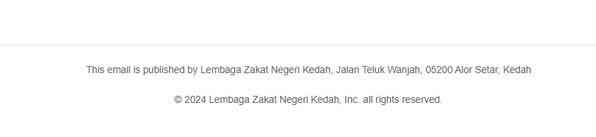

⚠️
Amaran! Anda telah menjadi mangsa serangan Phishing!
PERHATIAN
Tindakan ini adalah sebahagian daripada ujian phishing yang dijalankan untuk menguji tahap kesedaran semua individu dalam organisasi LZNK terhadap jenis serangan ini, dengan harapan agar semua pihak dapat mengenal pasti serta bertindak mengikut prosedur keselamatan yang ditetapkan dalam menghadapi ancaman serangan phishing pada masa akan datang.
APABILA ANDA MENERIMA E-MEL YANG MECURIGAKAN, IKUTI LANGKAH-LANGKAH INI:
- Tenang dan jangan panik
- Sahkan kesahihan pengirim
- Teliti pada kesalahan ejaan atau pautan yang mencurigakan
- Elakkan klik pada mana-mana pautan atau memuat turun lampiran
- Laporkan cubaan penipuan kepada pasukan IT/keselamatan
- Mempelajari dengan lebih mendalam taktik dan langkah-langkah pencegahan serangan phishing
MENGAPA E-MEL INI DIKATEGORIKAN SEBAGAI PHISHING ?

Alamat e-mel pengirim adalah mencurigakan
Tiada sebarang pernyataan kesahihan pada bahagian bawah e-mel seperti 'copyright'. Sebagai contoh ->
